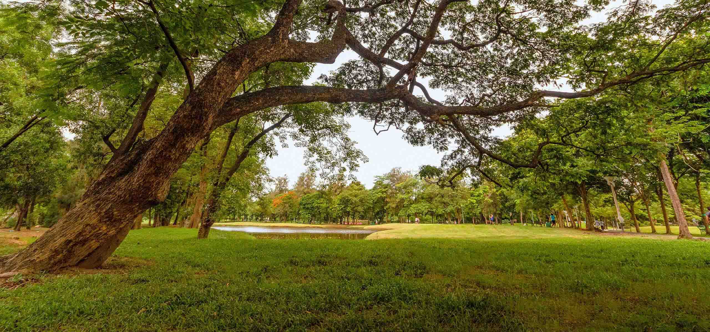

都市熱島-植栽篇
綠地對環境的降溫效果，主來自植物葉面蒸散及本身遮蔽等機制所產生的效應。蒸散作用是植物經由根系吸收水分，並透過植物葉表面氣孔開閉蒸散水分。植物吸收的水絕大部分喪失於蒸散作用中，因此透過植物蒸散作用可將水分釋放於空氣中，增加空氣濕度，消耗大量熱能以緩和氣溫上升。不僅增加園區舒適度，使提升市民使用率、滿意度。
Urban Heat Island


都市熱島-水體篇
水主要降低熱島效應的機制主要來自於表面水分的蒸發作用以潛熱(latent heat)的方式帶走熱能，再加上水體的熱容量(heat capacity)大，導致相同吸熱狀況下水體較其他大部分表面材質而言升溫緩慢等所產生的效果。常見於噴泉方式，水能夠降溫原理來自於潛熱，潛熱(Latent heat)是指物質在物態變化過程中，在沒有溫度變化情況下，吸收或釋放的能量。水體相較於其他都市常見表面材質具有較大的熱容量，因此相較於一般空地及柏油路面，大面積的水體的溫度較另外兩者低15-20℃之多。
Urban Heat Island


都市熱島-鋪面篇
建築物與鋪面主要之影響係來自都市表面材質之高吸熱力、街道幾何形式之熱吸收增加。建物因結構物形狀不同、表面材質不同，導致建物溫度高於周邊區域。鋪面表面材質比熱、反照率、熱容量的不同，導致地表溫度也有所差異。熱島效應影響較大之區域主要分佈於人為建造之不透水層鋪面上。天然鋪面(如草皮等)、透水鋪面(如植草磚等)的表面溫度比人工材質(如柏油路、連鎖磚等)來得低，且天然材質鋪面具有降溫效果。
Urban Heat Island